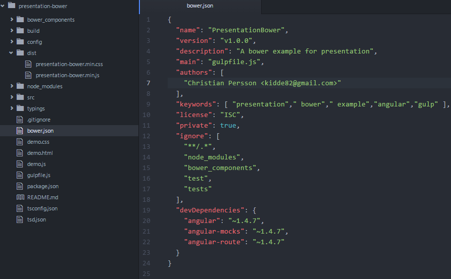
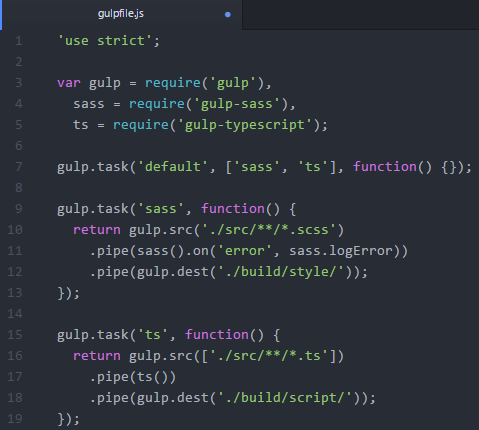
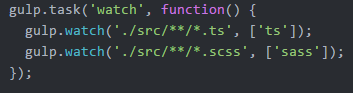
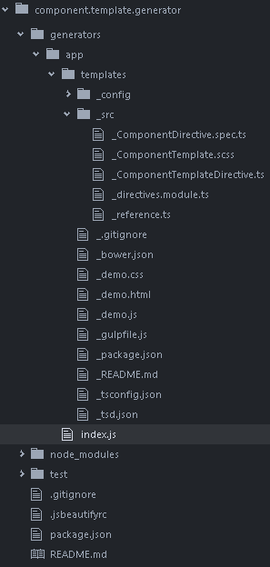
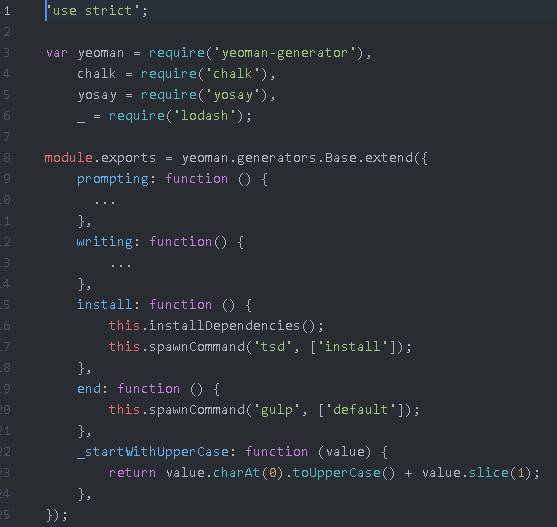

Bower, Gulp & Yeoman
an introduction
Created by Christian Persson
Some background
Reusable/independent components
Speed up development
Angular directives
Bower components
Bower
A package manager for the web
www.bower.ioInstall Bower and packages
Install Bower
$ npm install -g bower
Install Packages
# Install a bower-registered package
$ bower install angular
# Install package from git repository
$ bower install git://github.com/Kidde82/presentation-bower.git
Package will be installed in the current directory
Use Bower packages
Installed packages is found in /bower_componens folder
So if you installed the angular package, this is how to reference it in your code
Bower package structure
Gulp
Automate and enhance your workflow
www.gulp.comGulp Installation
Install Gulp
$ npm install -g gulp
gulpfile.js
Example packages
gulp-typescript - Compiles typescript to js, also create .d.ts
gulp-sass - Compiles sass files to css
gulp-uglify - Minify javascript
gulp-minify - Minify css
gulp-concat - Concatenate files
Workflow
Gulp watch
Automatically run test
Code coverage
Webserver with live reload
Plugins
Almost 2000 plugins
Create your own plugins
Yeoman
Scaffolding tool for modern webapps
www.yeoman.ioInstall Yeoman and generators
Install Yeoman
$ npm install -g yo
Install generator
$ npm install -g generator-angular
Use generator
Create a new folder and open it
(foldername will be the app name in this case)
# Notice that you remove the word "generator" when calling yo
$ yo angular
You can pass parameters
Let's say we want typescript and not javascript
$ yo angular --typescript
Use generator
Or if you just want a controller and not a whole app
$ yo angular:controller nameOfController --typescript
Create your own generator
Use your own custom template
In a team, everyone will use the same template
Your developing speed will increase
Generator structure
index.js
Demo
Time for demo!
Questions?
Resources
http://bower.io/http://gulpjs.com/
http://yeoman.io/